Moonrise Stack
A restrained launch pad image with moonlight, negative space, and strong desktop cropping room.
{kind=link}
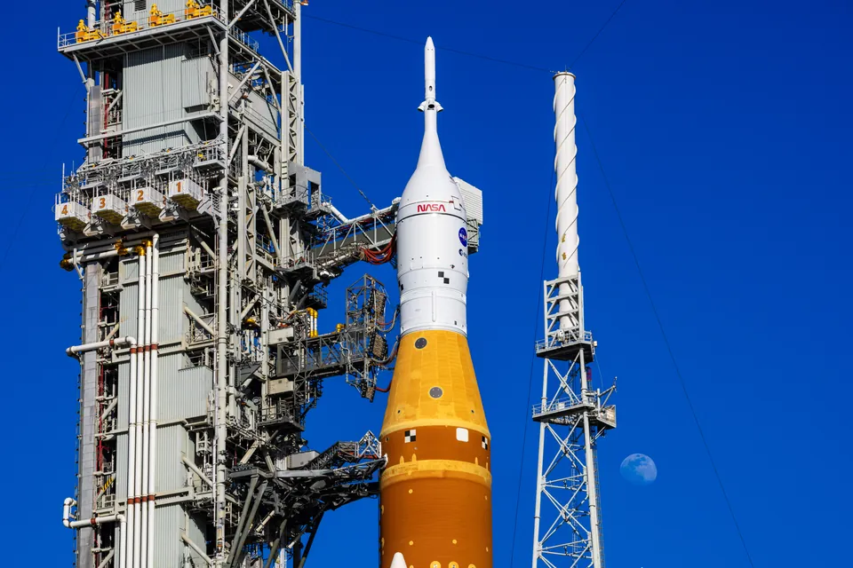
Independent Editorial Collection
HD NASA moon mission backgrounds for desktop and phone, curated from publicly released Artemis II launch photography, flight imagery, recovery photos, and official mission poster art.
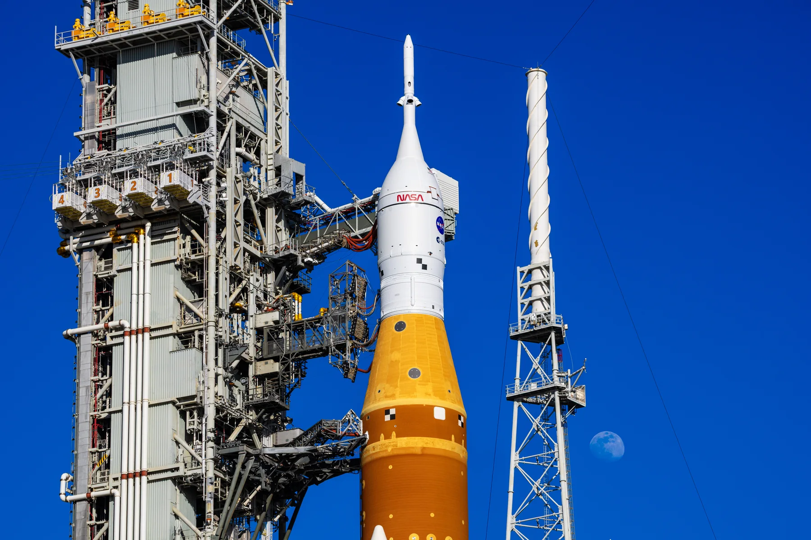
Featured Downloads
The collection opens with one lunar-launch composition for widescreen desktops and one vertical liftoff frame built for lock screens.
A restrained launch pad image with moonlight, negative space, and strong desktop cropping room.

The cleanest portrait-oriented launch shot in the set, with flame, smoke, and a strong silhouette.
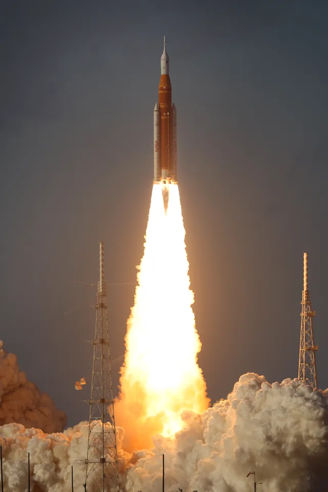
Curated Grid
Filter by mission phase to move from launch prep to lunar flight, recovery, and poster art. Every download is hosted locally for fast browsing and linked back to NASA.
A moonlit pad shot that frames SLS and Orion as a single monumental silhouette.
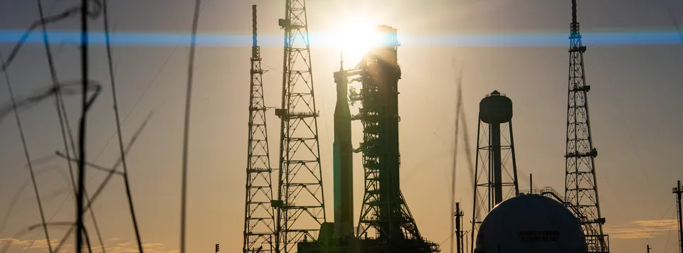
An anamorphic sunset composition built for wide monitors and cinematic crops.
A vertical launch frame with dense flame texture and a clean silhouette of ascent.
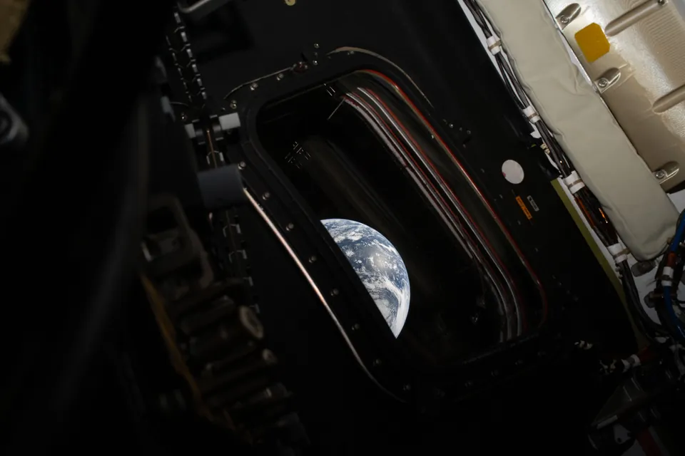
A quiet deep-space view that turns Earth into a luminous waypoint behind the mission.
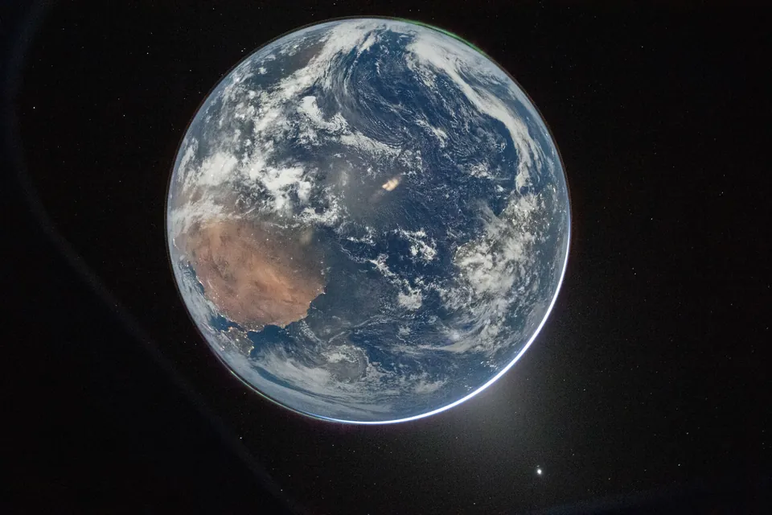
A clean orbital perspective image suited to minimalist lock screens and dark desktops.
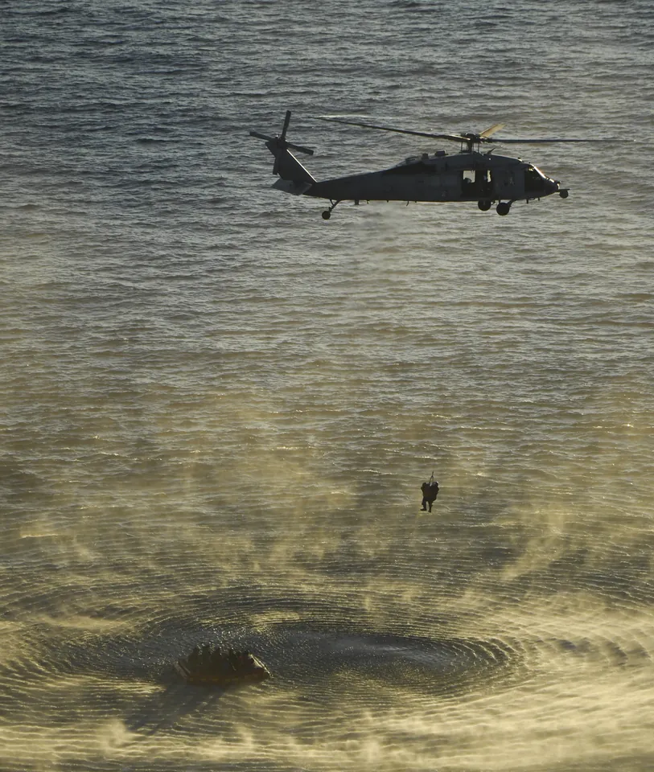
A vertical recovery scene that captures the human side of the mission after splashdown.
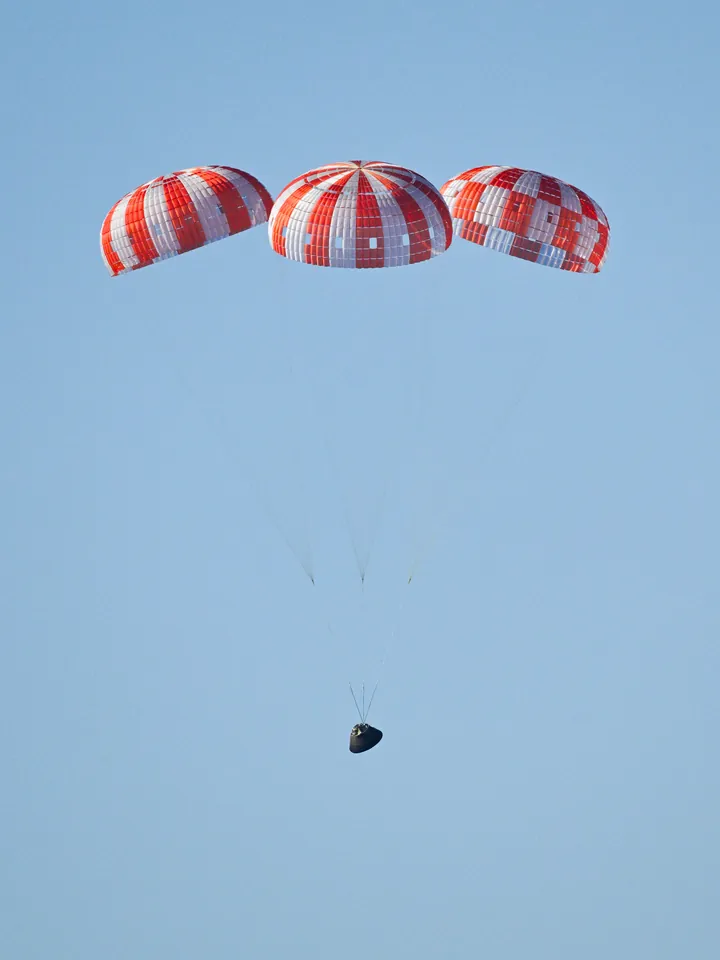
Orion under parachutes moments before Pacific splashdown on April 10, 2026.
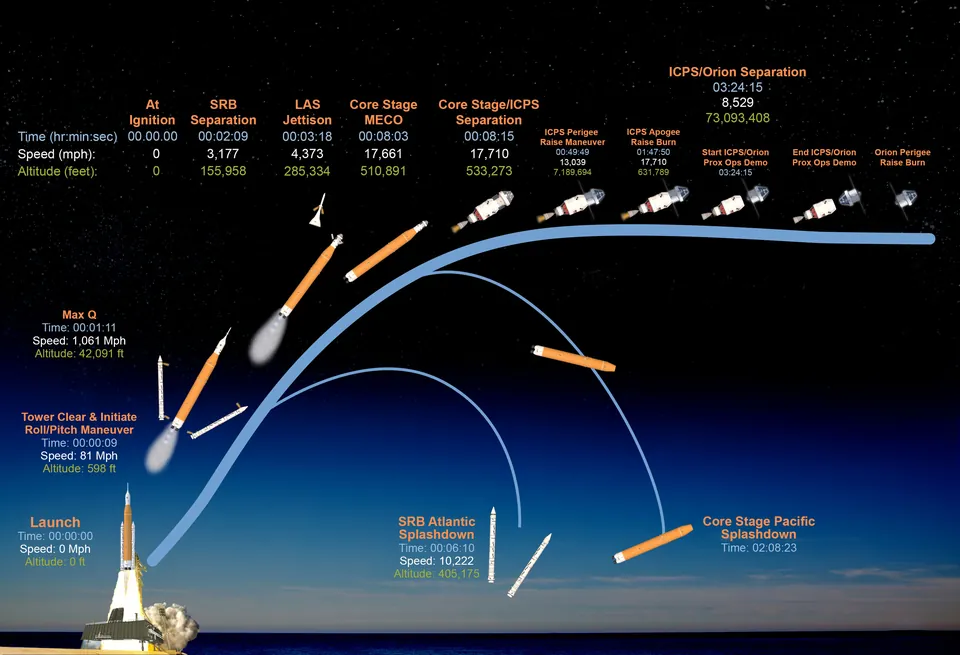
NASA's ascent trajectory graphic for readers who want a mission map in wallpaper form.
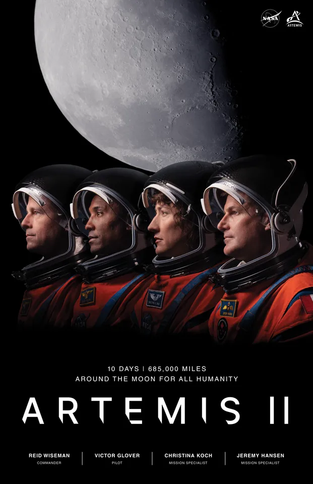
Official mission crew poster art with a portrait-oriented editorial feel.
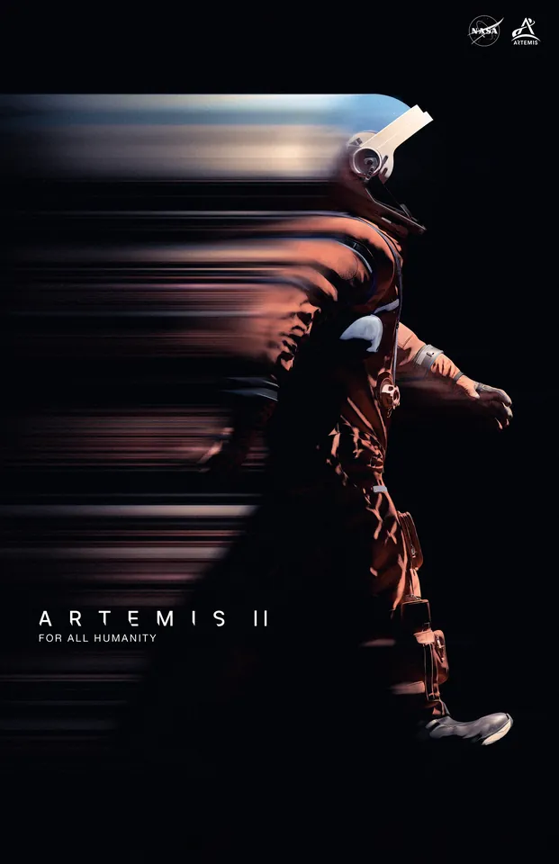
The original Artemis II poster rendered for tall mobile and tablet displays.
Mission Snapshot
This site packages NASA imagery for fast wallpaper browsing, but it does not present itself as NASA, does not use NASA brand marks as site identity, and links back to original NASA source records on every asset card.
FAQ
Artemis II is NASA's first crewed Artemis mission. NASA launched it on April 1, 2026 as an approximately 10-day test flight around the Moon and back.
No. It is an independent editorial collection built around publicly released NASA Artemis II imagery. The site credits NASA sources and avoids implying endorsement.
Both. The set includes desktop landscapes, one ultrawide option, and several portrait-oriented launch, recovery, and poster picks for phones and tablets.
From the NASA image archive, NASA mission graphics, and official mission coverage pages. Each wallpaper card includes a direct link to the corresponding NASA source record.
Credits & Usage
NASA says factual use of NASA content that does not imply endorsement can be used without explicit permission, and NASA should be acknowledged as the source. This archive follows that boundary.
Disclaimer: this is not an official NASA site, not a NASA partner property, and not a page endorsed by NASA. NASA insignia, logotypes, and identifiers are not used as site branding.
{kind=link}
{kind=link}
{kind=link}
{kind=link}
{kind=link}
{kind=link}
{kind=link}
{kind=link}
{kind=link}